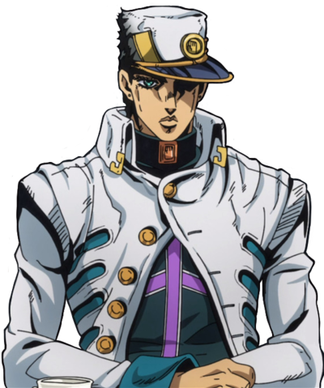

This is my favorite Joestar!
I really love his design so much! Throughout the parts that he is in, constantly changing and the style of his clothing are so good. The way Araki Hirohiko draws him in different styles and poses are wonderful!
His personality can be described as aloof nature. Though he is a quiet individual but he has a gentle heart and is loyal to those he likes. He is highly intelligent, perceptive, intelligent, and quick-witted while keeping his cool nature. Not letting anyone get one over him or affect his cool. He is a master strategist, he is 6'5 and a well built man.
Part 3 Outfit

Part 4 Outfit
Part 5 Outfit
Part 6 Outfit
Star Platinum Abilities

Star Platinum Part 3
Star Platinum Part 4
Star Platinum Part 6